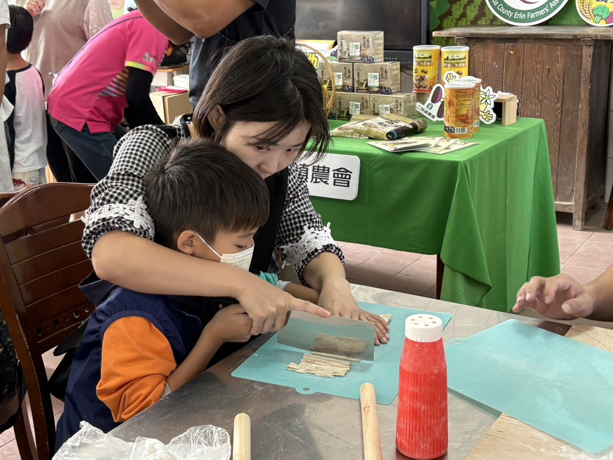
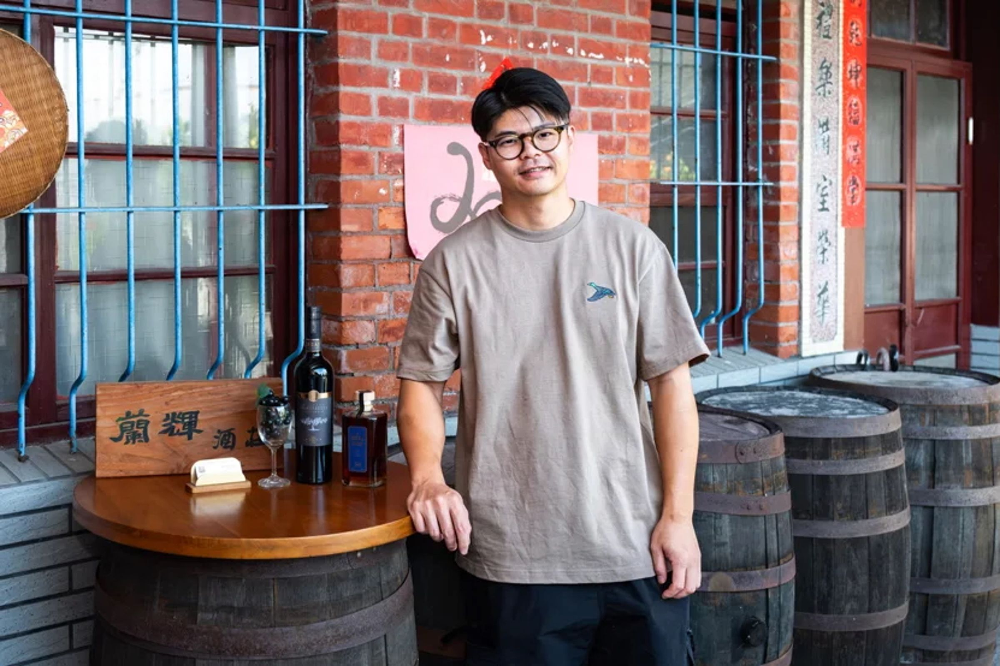
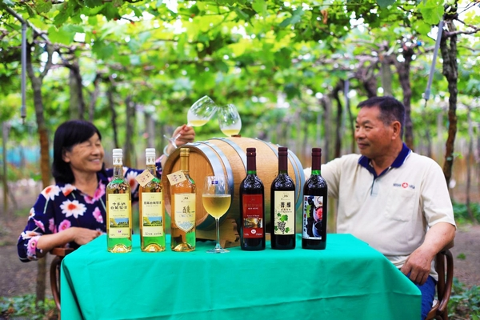
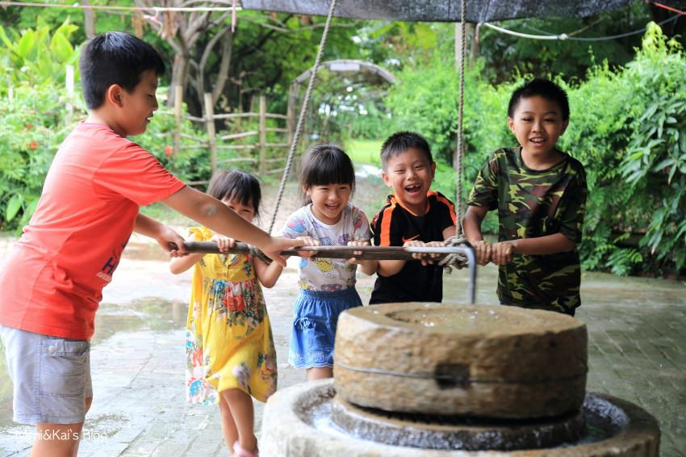
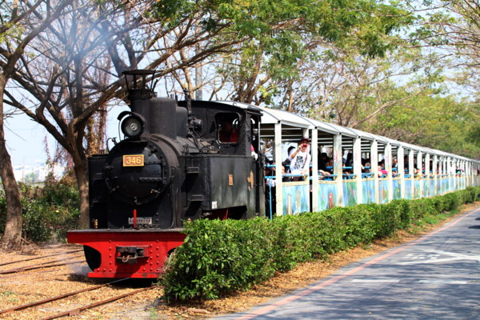

HANDS-ON / 基本行程
手打蕎麥麵｜揉一段田野的香氣
從和粉、揉麵到擀切，把二林蕎麥變成自己的手作成品。從田間作物到一碗麵，認識二林的食農故事。
成品以帶回家料理為主；操作內容依預約課程安排。照片為過往食農活動紀錄。
 餓，林時起意！ERLIN SLOW TRAVEL
餓，林時起意！ERLIN SLOW TRAVEL先走進葡萄園，認識二林的風土；再從手作與鐵道體驗，留下自己的地方記憶。

旅客當天參與葡萄原料處理與釀造起始，現場品嚐的是酒莊已完成的成熟酒款，而不是自己當天製作的酒。
若酒莊確認可提供服務，後續由業者依製程完成發酵、熟成、裝瓶與合法交付；時間依實際製程為準，不能保證五天完成。
葡萄處理、釀造起始DIY與成熟酒款品飲；後續成品交付須由合作酒莊確認。
葡萄汁、榨果汁或葡萄果醬等無酒精加工體驗。
葡萄食農教育、果汁與加工手作，不提供酒精品飲。
從一把蕎麥粉、一串葡萄到一座土窯，把地方故事變成能參與的體驗；再搭上五分車，接續糖業的記憶。

從和粉、揉麵到擀切，把二林蕎麥變成自己的手作成品。從田間作物到一碗麵，認識二林的食農故事。
成品以帶回家料理為主；操作內容依預約課程安排。照片為過往食農活動紀錄。

把葡萄的風味帶進手作：成年飲酒者可選釀造起始DIY；親子與不飲酒的旅客可選無酒精葡萄汁，依喜好自由參加。
釀酒後續發酵、裝瓶與配送依合作酒莊安排，另確認費用；未成年採無酒精活動。照片為葡萄園場景，非DIY操作紀錄。

從泥土與火候認識農村料理，一起等待開窯，把手作、分享與午餐放進同一段體驗。
焢窯餐食套裝已納入基本行程；食材、操作與開窯時間依團體預約安排。

搭乘五分車認識糖廠與鐵道文化。手作之後，留一段坐著看風景的時間，感受糖業留下的地方記憶。
以團體預約搭乘安排，依營運班次確認，並與焢窯活動時間銜接。